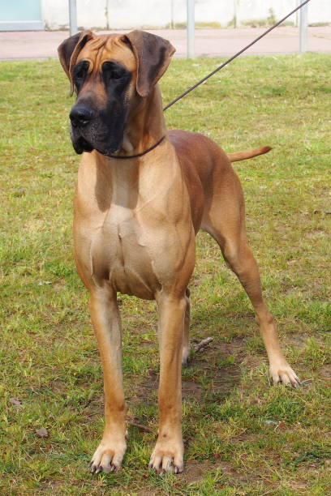

Bacon Q Dog

Bacon Q. Dog is a 9yr old labradoodle. He prefers to spend his days lounging among the three different beds/couches that his family has gifted him. He enjoys a walk or two around the neighborhood, as long as he can pretend that he doesn't see any of the other animals to avoid the embarrassment of not wanting to admit he has no wolf-like skills in chasing them.
At night just as the rest of the family is ready to relax, Bacon suddenly wants to release all of his energy. He will place his toys on a mini couch and frantically drag the couch around, giving his toys "a ride." There is also a lot of rolling. Lots and lots of rolling.
Photo Gallery


Likes
- Belly rubs
- Playing tug-of-war
- Sneaking onto the couch
Raven Huskey

Raven the Husky is a furry force of nature, and mischief is her middle name. With a sleek, obsidian coat that glistens like a moonlit night, she's a canine enigma wrapped in fur. Her striking blue eyes seem to hold the secrets of the cosmos, and when she gazes at you, it's as though she's pondering the mysteries of the universe.
But don't be fooled by her stoic appearance; Raven is a certified goofball. She'll gleefully "talk" to you in her husky howl language, and her zoomies in the backyard are the stuff of legend. When she's not channeling her inner wolf, Raven loves cuddling up for Netflix marathons, where she insists on occupying most of the couch. With Raven around, life is an adventure filled with laughter, love, and a whole lot of fur.
Photo Gallery

Likes
- Jumping
- Playing with a ball
- sleeping in bed
Sunny Golden Retriever

Sunny, the Golden Retriever, radiates happiness wherever he goes. His golden coat gleams in the sunlight, mirroring his sunny personality. With an ever-wagging tail and a heart full of love, he's the ultimate embodiment of joy and loyalty.
Sunny's boundless energy and enthusiasm make every day an adventure, whether he's fetching a ball at the park or snuggling on the couch after a long day of play. His warm, brown eyes are windows to a soul overflowing with affection, and his gentle nature melts hearts wherever he roams.
Photo Gallery


Likes
- Swimming
- Barking
- Rolling in the grass
Sunny Golden Retriever
Scooby, the Great Dane, is a gentle giant with a heart as massive as his size. His soulful eyes and affable demeanor make him not just a beloved pet but a cherished member of the family.
Despite his imposing stature, Scooby is a big softie at heart, often found snuggled up with his humans on the couch, where he revels in cozy cuddles and long naps.
Photo Gallery
Likes
- Cuddling
- Playing with leaves
- Chasing flies
Garfield

Garfield, the delightful orange feline, possesses an insatiable curiosity and a penchant for mischief. He spends his days exploring every nook and cranny of the house, from the highest shelves to the coziest corners. His bright, inquisitive eyes and playful antics are a constant source of joy.
When he's not engaged in his adventurous expeditions, Garfield enjoys sunbathing by the window, soaking up the warmth and tranquility. He's an expert at pouncing on toys and can turn even the simplest item into a source of entertainment. Garfield's playful spirit and endearing quirks make him the heart and soul of the household, a beloved companion who brightens every day with his presence.
Photo Gallery


Likes
- Eating
- Purring
- Chasing mice